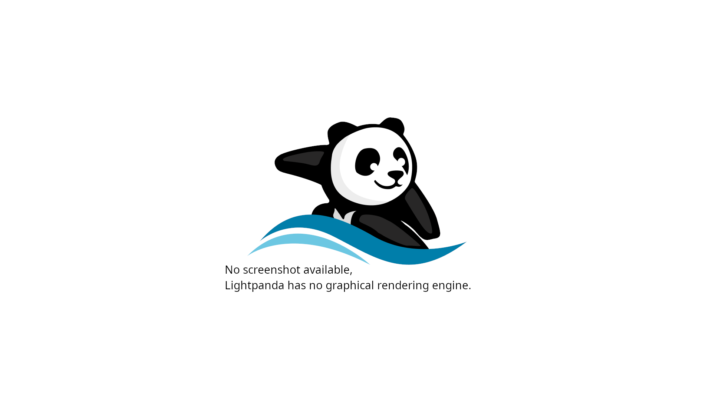

CDP Server
Lightpanda includes a built-in Chrome DevTools Protocol (CDP) server that allows you to control the browser programmatically using industry-standard automation tools like Puppeteer, Playwright, and chromedp.
Prerequisites: You should have Lightpanda installed before proceeding. See the Installation guide if you have not set it up yet.
Starting the CDP Server
Launch the CDP server with the serve command, specifying the host and port to listen on:
./lightpanda serve --host 127.0.0.1 --port 9222
You should see output confirming the server is running:
INFO app : server running
address = 127.0.0.1:9222
Common Server Options
| Option | Description | Default |
|---|---|---|
--host |
IP address to bind to | 127.0.0.1 |
--port |
Port number for the CDP server | 9222 |
--obey_robots |
Respect robots.txt rules when fetching pages |
disabled |
--log_format |
Log output format (pretty or json) |
json |
--log_level |
Logging verbosity (info, debug, warn, err) |
info |
Example with all options:
./lightpanda serve --obey_robots --log_format pretty --log_level info --host 127.0.0.1 --port 9222
Running with Docker
If you installed Lightpanda via Docker, the CDP server starts automatically and is exposed on port 9222:
docker run -d --name lightpanda -p 9222:9222 lightpanda/browser:nightly
Connecting with Puppeteer
Puppeteer connects to Lightpanda through the browserWSEndpoint option. Install Puppeteer Core first:
npm install puppeteer-core
Then connect to the running CDP server:
import puppeteer from 'puppeteer-core';
const browser = await puppeteer.connect({
browserWSEndpoint: "ws://127.0.0.1:9222",
});
const context = await browser.createBrowserContext();
const page = await context.newPage();
await page.goto('https://example.com', {
waitUntil: "networkidle0"
});
const title = await page.title();
console.log('Page title:', title);
await page.close();
await context.close();
await browser.disconnect();
Extracting Page Content
A common use case is extracting data from a page after JavaScript execution:
const browser = await puppeteer.connect({
browserWSEndpoint: "ws://127.0.0.1:9222",
});
const context = await browser.createBrowserContext();
const page = await context.newPage();
await page.goto('https://example.com', {
waitUntil: "networkidle0"
});
const links = await page.evaluate(() => {
return Array.from(document.querySelectorAll('a'))
.map(a => a.getAttribute('href'));
});
console.log(links);
await page.close();
await context.close();
await browser.disconnect();
Connecting with Playwright
Playwright can connect to Lightpanda using the connectOverCDP method. Install Playwright first:
npm install playwright-core
Then connect:
import { chromium } from 'playwright-core';
const browser = await chromium.connectOverCDP(
'http://127.0.0.1:9222'
);
const context = browser.contexts()[0];
const page = await context.newPage();
await page.goto('https://example.com');
const content = await page.content();
console.log(content);
await page.close();
await browser.close();
Note on Playwright compatibility: Playwright uses an intermediate JavaScript layer that selects execution strategies based on available browser features. If Lightpanda adds a new Web API, Playwright may choose a different code path that uses features not yet implemented. If you encounter issues, please create a GitHub issue and include the last known working version.
Connecting with chromedp (Go)
chromedp is a popular Go library for CDP automation. It queries /json/version to discover the WebSocket URL, then connects:
package main
import (
"context"
"fmt"
"log"
"github.com/chromedp/chromedp"
)
func main() {
ctx, cancel := chromedp.NewRemoteAllocator(
context.Background(),
"ws://127.0.0.1:9222",
)
defer cancel()
ctx, cancel = chromedp.NewContext(ctx)
defer cancel()
var title string
err := chromedp.Run(ctx,
chromedp.Navigate("https://example.com"),
chromedp.Title(&title),
)
if err != nil {
log.Fatal(err)
}
fmt.Println("Title:", title)
}
How the CDP Server Works
When a client connects, the server handles the interaction in stages:
-
HTTP handshake – The client connects via TCP and sends an HTTP request. The server responds to
/json/versionwith the WebSocket debugger URL, or upgrades the connection to WebSocket on/. -
WebSocket upgrade – Once upgraded, the connection switches to the CDP protocol. A
CDPinstance is created to manage the browser session. -
Message dispatch – Each incoming CDP message is parsed and routed to the appropriate domain handler (Page, DOM, Network, Runtime, etc.) based on the method name.
-
Session management – The server creates a
BrowserContextwhen requested by the client, which manages a single browser session including page lifecycle, DOM tree, and JavaScript execution.
Supported CDP Domains
Lightpanda implements the following CDP domains:
| Domain | Purpose |
|---|---|
| Page | Page navigation, lifecycle events, screenshots |
| DOM | DOM tree inspection and manipulation |
| Runtime | JavaScript execution and evaluation |
| Network | HTTP request/response monitoring |
| Fetch | Request interception and modification |
| Input | Mouse and keyboard input simulation |
| Target | Browser context and target management |
| Emulation | Device and viewport emulation |
| CSS | Stylesheet inspection |
| Log | Browser log capture |
| Accessibility | Accessibility tree inspection |
| Security | Security state information |
| Storage | Cookie and storage management |
| Performance | Performance metrics |

Connection Lifecycle
Understanding the connection lifecycle helps when debugging automation scripts:
- Connect – Your client establishes a WebSocket connection to
ws://host:port/. - Create context – The client requests a new
BrowserContextviaTarget.createBrowserContext. - Create page – A new page (target) is created within the context.
- Attach – The client attaches to the target, receiving a
sessionIdfor subsequent commands. - Interact – Send CDP commands (navigate, evaluate JS, query DOM) using the session.
- Cleanup – Close the page, dispose the browser context, and disconnect.
Each connection handles one browser context at a time. If you need concurrent sessions, establish multiple WebSocket connections.
Network Interception
Lightpanda supports intercepting and modifying network requests through the Fetch domain:
const browser = await puppeteer.connect({
browserWSEndpoint: "ws://127.0.0.1:9222",
});
const context = await browser.createBrowserContext();
const page = await context.newPage();
await page.setRequestInterception(true);
page.on('request', request => {
if (request.resourceType() === 'image') {
request.abort();
} else {
request.continue();
}
});
await page.goto('https://example.com');
await browser.disconnect();
Telemetry
By default, Lightpanda collects and sends usage telemetry. Disable it by setting an environment variable:
LIGHTPANDA_DISABLE_TELEMETRY=true ./lightpanda serve --host 127.0.0.1 --port 9222
You can read the privacy policy at lightpanda.io/privacy-policy.
Troubleshooting
Connection Refused
If you see a “connection refused” error, verify:
- The CDP server is running and listening on the expected host and port.
- No firewall is blocking the port.
- When using Docker, the port is properly mapped with
-p 9222:9222.
Timeout Errors
The CDP server has a configurable connection timeout. If your automation script takes a long time between commands, the server may close the connection. Ensure your script sends commands regularly or increase the timeout setting.
Unsupported Features
Lightpanda is still in beta and does not implement every Web API. If Puppeteer or Playwright throws an error about a missing method, check the project status for current feature coverage.
Related Topics:
- Installation – Download and install Lightpanda
- Quick Start – Overview of getting started
- CDP Protocol Architecture – Deep dive into the CDP implementation
- Architecture Overview – Technical architecture and design decisions